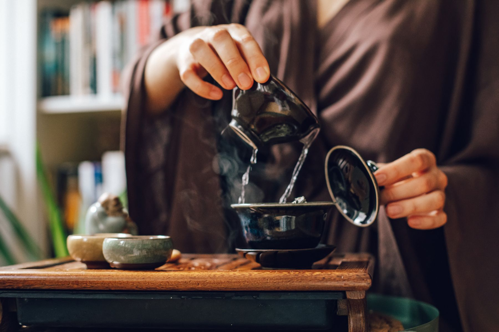
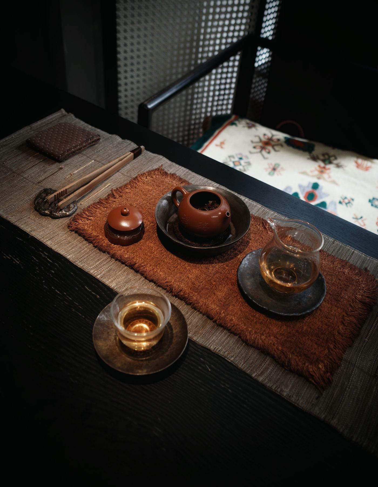
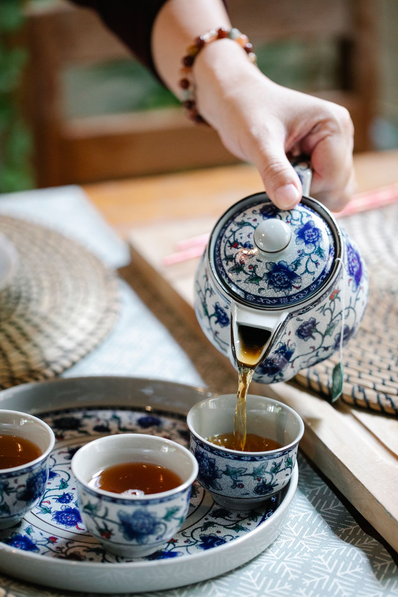
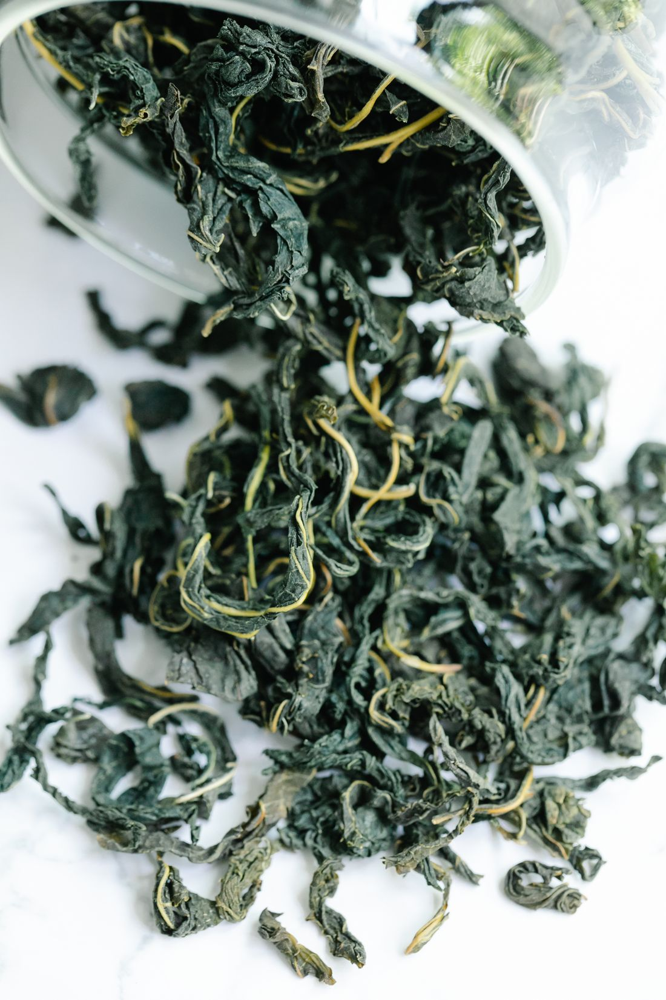
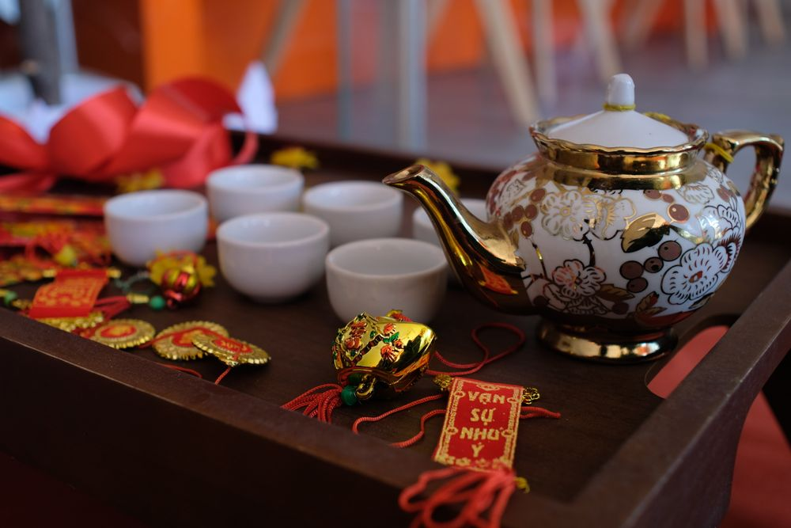

Зелёный чай01
Лун Цзин
Свежесть весеннего сада
Мягкий, свежий вкус с травянистыми и ореховыми оттенками.
120 000 VND демоПопробовать ↗
КИТАЙСКАЯ ЧАЙНАЯ · НЯЧАНГ
Место, где можно замедлиться. Открыть новый вкус, почувствовать тепло чашки и просто побыть в моменте.
Китайская чайная культура в ритме прибрежного города.
Демонстрационная концепция Tea House.


01 / О ЧАЙНОЙ
Мы представляем Tea House как тихое пространство в Нячанге, где китайская чайная культура встречается с лёгкостью жизни у моря.
Здесь в центре внимания — чайный лист, простая керамика и разговор без спешки. Можно прийти за первым знакомством с чаем или за своим любимым вкусом.
Хорошему чаю нужны вода, внимание
и немного вашего времени.
02 / ЧАЙНАЯ КОЛЛЕКЦИЯ
Шесть характеров — от нежной свежести до глубоких древесных нот. С чего начнётся ваша чайная история?
Все цены — примеры за одно чаепитие на человека, в вьетнамских донгах (VND). Наличие не подтверждено.
Свежесть весеннего сада
Мягкий, свежий вкус с травянистыми и ореховыми оттенками.
Цветочная лёгкость
Нежный аромат, цветочные ноты и долгое мягкое послевкусие.
Тепло утёсных гор
Насыщенный вкус с печёными, минеральными и древесными оттенками.
Медовое настроение
Округлый, согревающий вкус с медовыми и солодовыми нотами.
Глубина и спокойствие
Плотный настой, землистые и древесные оттенки, мягкое завершение.
Тихая нежность
Деликатный вкус с цветочными оттенками и лёгкой сладостью.
03 / ЧАЙНЫЕ ЦЕРЕМОНИИ
Небольшие чашки, несколько проливов, меняющийся аромат. Знакомство с традицией гунфу ча — через вкус, внимание и неспешную беседу.
Демонстрационный формат и цены. Реальные церемонии не проводятся через этот сайт.
Запланировать церемонию
04 / В ДЕТАЛЯХ
Фактура чайного листа. Тепло керамики. Красота простых вещей.


Все изображения — тематические фотоиллюстрации из Pexels. Они не показывают реальное заведение, его сотрудников или фактический ассортимент. Источники фотографий · Лицензия Pexels ↗
05 / ДО ВСТРЕЧИ ЗА ЧАЕМ
Tea House · Нячанг, Вьетнам
Демонстрационные контактыВы на демонстрационном сайте. Кнопки бронирования ведут в этот раздел: заявки не отправляются, места не резервируются.
Спасибо за интерес к концепции Tea House.